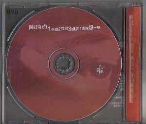
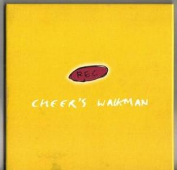

陳綺貞
簡介
陳綺貞是臺灣少有的創作型民謠歌手之一，而且她的歌曲大都由她自己作曲及作詞。
陳綺貞目前推出四張Demo專輯，均限量發售；除此之外，有八張專輯（包括二張精選兩張演唱會Live專輯），六張單曲和五張與他人合作推出的作品。
1993年，從臺北市立景美女子高級中學畢業。
1996年7月，與滾石唱片的子品牌魔岩唱片簽約。在此之前，她主要以校園以及酒吧走唱為主。
1999年，從國立政治大學哲學系畢業。
2003年，離開唱片公司，成為獨立音樂人。
音樂作品--Demo
Demo 1
狂戀（1994.9第十二屆木船民歌比賽現場錄音）
孤島（1997.8）
嫉妒（1996.6創作，1997誕生前夕演唱會現場）
讓我想一想（1996.12）

Demo 2
夜遊
Enemy
溫室花朵
慢歌3
微涼的你

Demo 3
他唱起歌來了
坐火車到傳說中的湘南海岸
媽媽睡了
我喜歡木村拓哉
朋友
其實我很羨慕你
星期天的下午
我有一套限量的約翰藍儂紀念郵票
我還是如此的清醒
我終於懂了
夢
黃色的浮板
我們連覺也沒睡決定連夜趕去拜訪艾立剋剋萊普頓
歌迷
整個世界的黑暗
九份的咖啡店
Demo 4
one of us singing lalala
that girl is you
red
a little
somebody calling
音樂作品--專輯
讓我想一想
還是會寂寞
Princess From East 01 Series 由滾石唱片發行於日本
吉他手
華麗的冒險
陳綺貞2005-2006花的姿態演唱會經典實錄
太陽